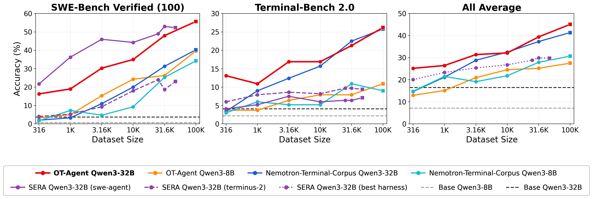
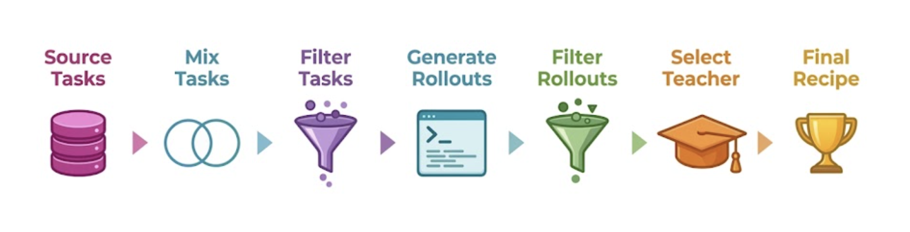
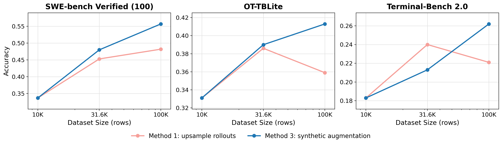
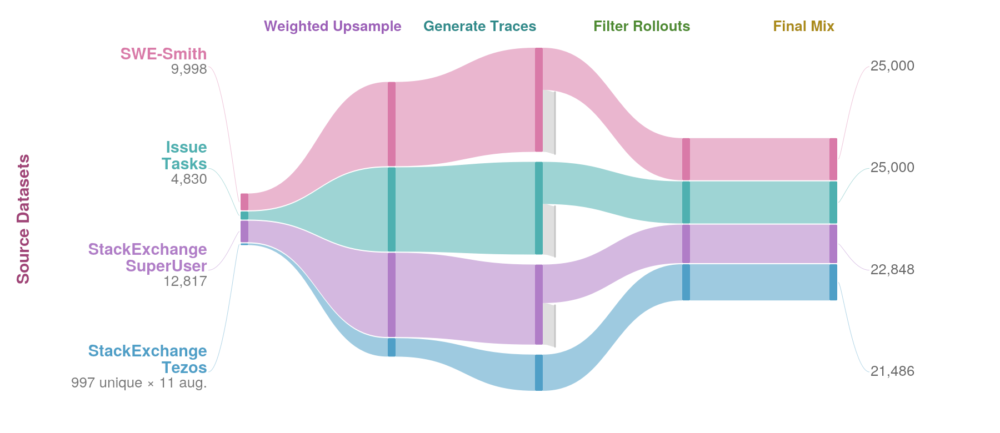
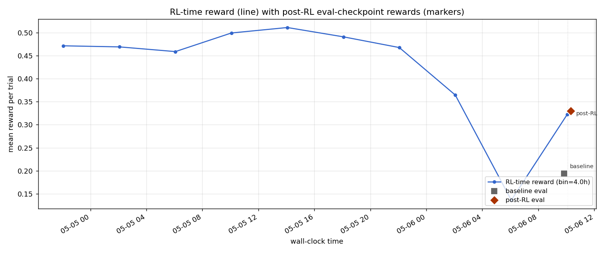
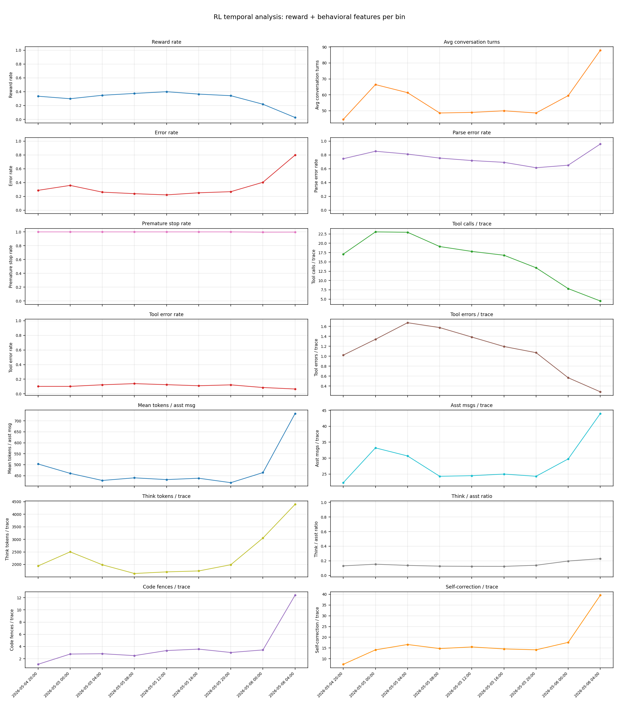

TL;DR
前沿 Agent 模型很强，但「怎么给 Agent 准备训练数据」几乎没有公开资料——开源权重的论文动辄 50 页，讲数据却只有两段。这篇论文把「数据配方」做成一门可复现的科学：用 100+ 次受控消融实验逐阶段拆解一条六步 SFT 数据流水线，找出每一步真正有效的策略，组装出 10 万条轨迹的 OpenThoughts-Agent-v2 数据集。用它微调 Qwen3-32B，在 7 个 Agent 基准上平均 44.8%，比最强开源数据模型 Nemotron-Terminal-32B 高 3.9 个百分点。论文还把数据、流水线、模型全部开源。
逐阶段验证每个设计
（32B 模型，新 SotA）
模型 Nemotron-Terminal
（task, trajectory）轨迹

- 三个子图：左 = SWE-Bench Verified-100（软件工程补丁），中 = Terminal-Bench 2.0（命令行任务），右 = 全部基准的平均。横轴是训练集规模（316 → 100K），纵轴是准确率。
- 红色实线 = OT-Agent Qwen3-32B，本文主角。在「全平均」子图上随规模单调上升，在 100K 处达到约 45%，是所有曲线的最高点。
- 蓝线 = Nemotron-Terminal-Corpus（32B），最强的开源数据基线；紫线 = SERA（其数据最多 47K，曲线提前终止）。在 SWE-Bench 单项上 SERA 中段一度更高，但它只擅长 SWE，且无法继续扩展。
- 虚线 = 未微调的 Base 模型，几乎贴地，说明 Agent 能力高度依赖后训练数据。
- 关键信息：OT-Agent 的优势不是「单项最高」，而是随规模持续增长 + 跨基准均衡领先。
问题：Agent 训练数据是一个「黑箱」
模型能用电脑、能调工具、能长时间推理，但外界几乎不知道这些能力背后的数据是怎么造的。
过去一代模型只会「回答问题」，新一代 Agent 模型可以像人一样操作电脑完成复杂任务，于是 Claude Code、Codex 这类应用迅速流行。但公开文献里关于「如何训练 SotA Agent 模型」的信息极少，尤其是训练数据。论文举了一个典型例子：
DeepSeekV4 的权重是开放的，配套论文超过 50 页，详细描述了架构与训练过程——但关于训练数据只有高度概括的两段话。
已有的开源尝试（SWE-Smith、SERA、Nemotron-Terminal、OpenSWE 等）虽然在造 Agent 数据，但有两个共同局限：
- 几乎都只盯一个基准：要么只刷 SWE-Bench（修 GitHub issue），要么只刷 Terminal-Bench（命令行），缺少跨任务的泛化视角。
- SFT 与 RL 各做各的：很少有人研究监督微调（SFT）和强化学习（RL）两个阶段如何衔接、如何组合。
沿着 OpenThoughts（推理数据配方）的思路，转向 Agent 后训练数据，目标是让模型在多个 Agent 基准上同时变强，并把整条数据流水线、实验数据和模型全部公开，让开放研究能在此基础上继续。
怎么判断「数据更好」？一套统一的评测标尺
在拆解流水线之前，先要有一把公平的尺子，否则每一步的「改进」都无从比较。
论文的核心方法论是逐阶段独立消融：把数据流水线拆成若干步，每一步固定其它步、只换当前步的策略，看下游评测谁更高。所有实验都在 1 万条轨迹规模上做——小到便宜、大到有信号；除非特别说明，轨迹都由 GLM-4.7-AWQ 作为教师在 terminus-2 harness + Daytona 沙箱里生成，再用全参数 SFT 微调 Qwen3-8B。
三个核心基准（边调边看）
- SWE-Bench Verified-100：在固定 commit 的 Python 仓库上生成补丁，由测试判定对错。
- OT-TBLite（100 题）：精心挑选、按难度均衡的 Terminal-Bench 风格任务，作为完整 TB2.0 的快速代理。
- Terminal-Bench 2.0（89 题）：人工撰写并验证，覆盖 SWE、生物、安全、系统管理、机器学习。
不同基准准确率量级差很大，直接平均会被高分基准主导。论文对每个候选策略，先在该阶段全部候选里算每基准 z-score（减均值、除标准差），再平均三个 z-score，让每个基准等权。此外还留出一组 OOD 基准（Aider Polyglot、BFCL、MedAgentBench、GAIA、FinanceAgent-Terminal），只在流水线全部定型后测一次，用来检验真正的泛化而非过拟合。
核心贡献：六阶段 SFT 数据流水线
这是全文的重头戏——把「造一条 Agent SFT 数据」拆成六步，每一步都用消融实验回答「到底该怎么做」。

- Source Tasks（取任务）：从各种来源收集 task 描述——这是流水线的原料，也是后面会证明最关键的一步。
- Mix Tasks（混合）：把多个来源按比例混合，避免只擅长单一基准。
- Filter Tasks（筛任务）：用过滤器（含 LLM 判断、解题所需 token 长度）剔除低质量任务。
- Generate Rollouts（生成轨迹）：让教师模型在沙箱里真正去做这些任务，录下完整的「思考 + 工具调用」轨迹。
- Filter Rollouts（筛轨迹）：剔除超时、子 agent、过短（<5 轮）的轨迹。
- Select Teacher（选教师）：决定由哪个模型来生成轨迹——会发现「最强的模型不等于最好的老师」。
- 最右的 Final Recipe 是这条流水线产出的最终数据配方。
下面这条交互流水线，点任一阶段即可看到该步的消融结论、效应大小和最终采用的胜出策略：
四条贯穿全文的关键发现
和推理数据一样，选什么任务描述是整条流水线里最关键的因素——好坏来源能把下游准确率拉开高达 30 个百分点。
基准分数最高的模型，不一定是最好的教师。GPT-5.3-Codex 比更老的 GLM-4.7 还差约 5%。
保留轮数更多（≥5 轮）的执行轨迹能稳定提升数据质量，即使在固定 token 预算下也成立。
在最大训练规模下，重复 Top 几个来源会边际递减，因此需要扩展来源 / 合成增广来增加多样性。
扩展数据规模：上采样会撞墙，合成增广能突破
流水线定型后得到 10K 数据。要做大到 100K，有四种朴素思路，但只有一种真正持续有效。
论文比较了四种扩展方式：
- 方法 1 · 上采样：同一批任务描述，多生成几条轨迹。最简单，但 31.6K → 100K 几乎不再涨（SWE +3pp / TB −2pp，都在误差内）。瓶颈是任务描述的多样性。
- 方法 2 · 多取原始任务：从原来源拿更多任务。受限于来源本身——例如 Tezos 只有 997 条不重复任务。
- 方法 3 · 合成增广：用指令改写策略，把 997 条 Tezos 基础题的表层形式从约 902 扩到 2.1 万种，不引入新的底层问题，但持续带来提升。
- 方法 4 · 更多来源：从 Top-4 扩到 Top-8、Top-16。结果不可靠——Top-8 未必更好，Top-16 在每个基准都更差。于是保留 Top-4。

- 粉线 = 方法 1（上采样更多轨迹）：在 31.6K → 100K 区间，OT-TBLite 和 Terminal-Bench 2.0 上甚至掉头向下，说明仅靠重复任务、堆轨迹已经撞到天花板。
- 蓝线 = 方法 3（合成任务增广）：在三个基准上都持续上升到 100K，SWE 到约 0.56、TB2.0 到约 0.26。
- 两线在 10K 处重合（同一基座），只有扩展超过 10K 后才分叉——干净地隔离出「扩展方式」这一个变量。
- 结论：限制扩展的不是轨迹数量，而是任务描述的多样性；合成增广恰好补上了这一点。
最终的 100K 数据集 OpenThoughts-Agent-v2：从 31.6K 单调提升到 100K（SWE-Bench Verified-100 +7.7pp、Terminal-Bench 2.0 +5.0pp），32B 模型在 100K 处达到 26.2% TB2.0 / 41.3% OT-TBLite / 55.7% SWE-Bench Verified-100。

- 左侧四个来源：SWE-Smith（合成 GitHub issue，9,998）、Issue Tasks（4,830）、StackExchange SuperUser（人写 Linux 问题，12,817）、StackExchange Tezos（997 条独立任务 × 11 倍增广）。
- Weighted Upsample（加权上采样）：用 gpt-5-nano 的「解题所需长度」作为上采样权重——每条独立任务至少生成一条轨迹，剩余容量按分数比例分配，从而在每个规模都保持完整任务覆盖。
- Generate Traces → Filter Rollouts：教师生成轨迹后，统一施加 ≥5 轮过滤（图中流带变窄即被筛掉的部分）。
- Final Mix（最终配比）：四源约 25,000 / 25,000 / 22,848 / 21,486，合计接近 10 万，配比相对均衡。
附：8B 模型上同样成立（图 5）
在 8B 规模重复验证，OT-Agent 数据配方在大多数匹配规模下都领先 Nemotron-Terminal-Corpus 基线：例如 10K 行时 SWE-Bench Verified-100 达到 24.3% vs 9.3%；在 100K 行达到 39.7% SWE / 10.9% TB2.0，两个核心基准都超过基线（34.3% / 9.0%）。和 32B 一样，性能在最大规模处仍在上升而非饱和。

强化学习：数据来源同样决定成败
除了 SFT，论文也研究 RL 的数据策划——而且发现「选哪个数据源」依然是胜负手。
为了控制算力，RL 实验都在 8B 规模：用 RLOO 算法、基于验证器成功与否的二值奖励，从一个 SWE-Smith 蒸馏出的冷启动检查点（OT-Agent-ColdSFT）出发训练。主力实验跑在 24×A100 上、batch 64、约 46 小时。消融时只变数据源、其它全固定，对比了 6 个来源（pymethods2test、inferredbugs、code-contests、nemotron-code-oracle、llm-verifier-freelancer、nl2bash，以及 SWE-Smith、R2EGym）。
不同 RL 数据源的原始平均准确率相差 7.6 个点，远大于 2.0 点的「重复跑」复现噪声——也就是说，这个差距是真实的信号，不是随机波动。
最强来源：pymethods2test
它是把 Codeforces / CodeChef / TopCoder 风格的竞赛题，重写成单函数 Python 契约：自动生成 docstring 式任务描述和单元测试，没有多文件编辑、没有仓库导航、没有跨轮的 shell 状态累积。参考解约 20 行、任务描述约 200 词。它高度可复现、高度可用、难度适中。这种简洁但有挑战的任务，诱导冷启动模型形成一致的解题模式——在 RL 中把「反复思考 + 试探性 sed/grep」替换成紧凑的「探索→打补丁→提交」策略。
有趣的是 ID / OOD 的解耦：强调单函数代码正确性的来源（inferredbugs、code-contests）在分布内（ID）领先；更异质的工具使用来源（llm-verifier-freelancer、nl2bash）在分布外（OOD）更有竞争力——而 只有 pymethods2test 同时位居两者前列。
结果：SFT + RL 能组合
- 完整后训练流水线（SFT + RL）在两个核心基准和 7 基准平均上都超过基线，比 Qwen3-8B 基座平均高 18 个点。
- RL 在 Core 基准上比纯 SFT 检查点额外带来约 +5 个点（如 SWE-Bench-Verified +5.4）。
- 「欠训练」的 SFT 模型反而从 RL 中获益更多：用更少数据 SFT 出来的检查点，是更好的 RL 起点；而在 harness 里表现很差的 Qwen3-8B 基座则无法从 Agent RL 中获益。
有意思的点：RL 到底学到了什么？
论文用一整个附录做机制分析——为什么 pymethods2test 这么强？答案是它教会模型「更努力地探索」。
论文对比了两次同流程、只换数据源的 RL：pymethods2test（hero，最强 ID） 与 llm-verifier-freelancer（baseline，最强 OOD）。结合三种视角——轨迹的时间分箱统计、RL 前后逐轨迹行为差、以及 GPT-5 成对裁判——得到一个清晰的镜像故事：一个学会「展开探索」，一个学会「压缩收敛」。
🚀 Hero：pymethods2test
- 思考 token 翻倍：30.3 → 65.4（+116%）
- 自我纠错 0.63 → 1.14（+81%）
- 工具调用 31.3 → 40.9（+31%）
- 对话更长：+12.9 轮、+29% token
- 裁判在 30 对中偏好 RL 后策略 25/30
🧲 Baseline：llm-verifier-freelancer
- 思考 token −42%
- 自我纠错 19.7 → 8.0（−59%）
- 工具调用 −8%、轮数 −7.8
- 每轮 token 基本不变（+1%）
- 裁判偏好 RL 后策略 22/30，标签多为「更少工具调用 / 更短轨迹」
三条证据：① RL 后报错的工具调用绝对数反而更多（5.9 → 8.8，+48%），这与「钻解析器空子」相反；② 每次调用的报错率只升 4.1pp，多出的错误主要来自「调用更多」；③ mark_task_complete 的占比反而上升（1.9% → 3.0%），与「学会提前结束骗格式奖励」矛盾。在 100 道共享 SWE-Bench-Verified 任务上，RL 把 18 道从失败翻成通过，仅 1 道回退。
为什么这个数据源逼出了探索？
关键在奖励曲线的形状。pymethods2test 给出的是中等、未饱和、难以提升的奖励（在 0.47–0.51 徘徊，远离上限）。在 RLOO 下，这恰好是「奖励更努力」的区间——增量回报来自把一道题做得更彻底（想更多、调更多工具、多试几次修复），而不是来自快速取巧。但探索压力持续累积，最终模型会过度延伸，奖励从峰值崩塌到约 0.13（agent 超时率达 ~80%）。因此论文部署的是崩塌之前的检查点。

- 蓝线：训练时每条 rollout 的平均奖励（4 小时分箱）。先缓升至 ~0.51，随后急剧下坠——这就是过度探索导致的崩塌。
- 右侧两个标记：方块 = RL 前（base）在留出集的评测奖励 ~0.19；菱形 = 部署的 post-RL 检查点 ~0.33，约为基线两倍。
- 含义：崩塌是探索压力的副产物；只要在崩塌前取检查点，就能收获探索带来的增益。

- 蓝线聚集在时间轴右侧（base 评测在数月前，故灰方块远在左侧），平滑上升、无下坠。
- 奖励可被持续攻克 → 模型倾向「少废话、直接提交」：更少轮数、更少工具调用、更少思考。
- 这解释了它为何在 OOD（如金融）有竞争力，但在奖励「彻底性」的 ID Core 基准上迁移较差。
在 financeagent-14 任务上（post-RL 高置信获胜）：「基线绕了很多轮（113 轮、55 次工具调用）……RL 后的轨迹很短（12 轮、6 次工具调用）……避开了 EDGAR API、不再自我纠错，更直接地奔向目标指标。」 —— GPT-5 裁判对 llm-verifier-freelancer 的描述（附录 F）
一个反直觉的细节：Hero 检查点把许多「基线会放弃直至超时」的试验转化成了完成的尝试，而被救回的恰是更难的题——于是「已完成试验的平均奖励」反而下降（0.652 → 0.541），但计入全部试验的准确率却上升（0.19 → 0.33）。这说明评测要看「全试验准确率」，而非挑最好的一次。
展开：时间分箱的行为动态全景（图 8）
下图把 reward、各类错误率，以及九个逐轨迹行为特征沿训练时间画在一起。「先探索、后崩塌」的特征在多个面板中同时显现：当奖励见顶回落时，平均对话轮数、每条助手消息的 token、每轨迹思考 token、每轨迹自我纠错都在最后几个分箱里飙升，而每轨迹工具调用与工具报错反而下降——模型用「冗长的内部推理」替换了「有效的工具使用」，最终超时。

结论与局限
(vs Nemotron 41.9%)
(vs Nemotron 25.1%)
7 基准平均提升
用 OpenThoughts-Agent-v2 微调出的 OpenThinker-Agent-32B，是 Qwen3 系（或更早）≤32B 的最强开源数据模型，覆盖软件工程、命令行、工具调用、医疗、金融与通用助手任务。在 8B 规模，SFT 数据叠加 pymethods2test 的 RL 数据进一步超越最强 ≤8B 基线，初步证明 Agent 后训练的 SFT 与 RL 两阶段可以被设计成相互配合。数据、流水线、模型均在 openthoughts.ai 开源。
① RL 研究只在 8B 规模做，能否迁移到 32B 仍是开放问题；② 没有消融基座模型——所有 SFT 都从 Qwen3 出发，无法隔离预训练基座的贡献；③ 最大训练集只有 10 万条轨迹，能否外推到百万级仍未验证。
读完可以记住的三件事
- 数据配方可以做成科学：用统一标尺 + 逐阶段消融，把「玄学造数据」变成可复现、可解释的工程。
- 每一步都有反直觉结论：任务增广全部失败、最强模型不是最好老师、长轨迹更优、来源多反而递减。
- RL 学到的是「探索/压缩」的行为模式，而这取决于奖励曲线的形状——这把「数据源选择」和「策略行为」连了起来。